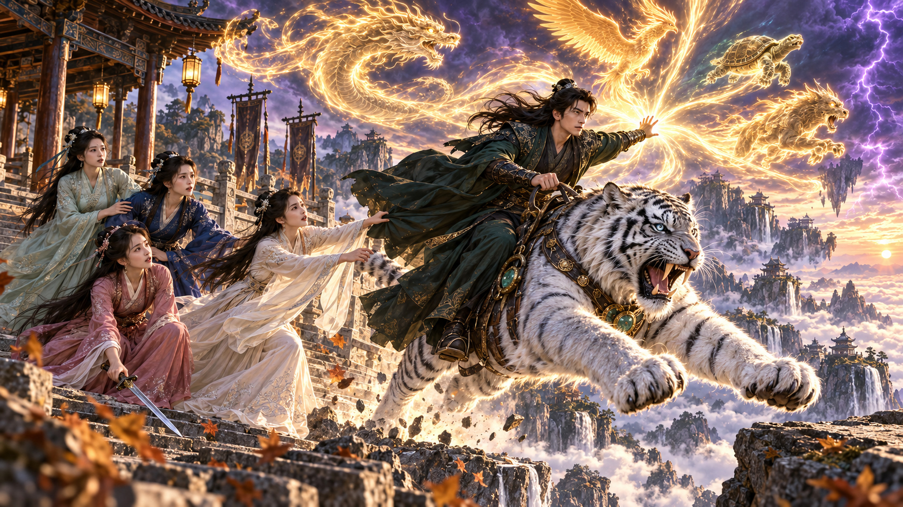

一纸断千谋
2026-11-06T00:00:00+08:00 北京时间
🤯 ¡El banco exigió cobrar a sus abuelos muertos! Él descubrió una estafa contra todo el pueblo 🔥
银行竟向他死去的祖辈讨债！他顺藤摸瓜，揭开坑害全村的骗局！
2026年11月6—15日，每天北京时间00:00、05:00；11月11日00:00因禁播留空，实际19部。
2026-11-06T00:00:00+08:00 北京时间
🤯 ¡El banco exigió cobrar a sus abuelos muertos! Él descubrió una estafa contra todo el pueblo 🔥
银行竟向他死去的祖辈讨债！他顺藤摸瓜，揭开坑害全村的骗局！
2026-11-06T05:00:00+08:00 北京时间
👻 ¡Los espectros invadieron su país! Su sistema invocó a 3000 maestros para invadirlos a ellos 🔥
诡异入侵他的国家！他觉醒系统，召唤三千祖师反攻诡异老巢！
2026-11-07T00:00:00+08:00 北京时间
😱 ¡El cadáver señaló a su asesino! Un artesano de mil años lo consiguió con unas agujas ⚡
尸体竟抬手指认凶手！活了千年的缝尸匠，仅凭几根针让真相重现！
2026-11-07T05:00:00+08:00 北京时间
👑 ¡Despertó como eunuco con un sistema! El emperador quiso matarlo y acabó perdiendo el poder 🔥
一觉醒来成了太监，还绑定系统！皇帝想杀他，最后却丢了大权！
2026-11-08T00:00:00+08:00 北京时间
🔥 ¡Solo era un masajista! Al buscar a su familia, se enfrentó a toda una red de apuestas ⚡
他只是个足疗工！为寻找家人，却与整张地下赌网正面交锋！
2026-11-08T05:00:00+08:00 北京时间
🐓 ¡Lo traicionaron y renació como gallo! Ganó fama con su sistema hasta convertirse en fénix 🔥
遭背叛后竟重生成鸡！他靠系统积攒声望，一路进化成凤凰！
2026-11-09T00:00:00+08:00 北京时间
⚔️ ¡Golpearon a su nieto y se burlaron de él! El anciano llevaba 50 años sellando su poder 🔥
他们打伤他的孙子，还嘲笑他年老无能！却不知他已封印修为五十年！
2026-11-09T05:00:00+08:00 北京时间
🤯 ¡El maestro ciego enseñó durante 500 años! Sus alumnos ya podían desafiar a los dioses ⚡
盲眼老师默默传道五百年！他教出的学生，竟已能与诸神抗衡！
2026-11-10T00:00:00+08:00 北京时间
👻 ¡Una mujer reía en la casa vacía! Buscaba a su novia, pero el incienso lo llevó a una trampa 😱
空无一人的屋里，竟传来女人笑声！他循香寻找女友，却一步步走入陷阱！
2026-11-10T05:00:00+08:00 北京时间
🐙 ¡Renació como pulpo y predijo el Mundial! Con su sistema, un hombre endeudado se hizo rico 💰
重生成章鱼，竟能预测世界杯！他凭系统让一个负债者翻身致富！
2026-11-11T05:00:00+08:00 北京时间
🌧️ ¡Su vecino desvió el agua para inundarlo! Levantó un muro y esperó la siguiente lluvia 🔥
恶邻故意引水淹他家！他只筑起一道高墙，静等下一场大雨！
2026-11-12T00:00:00+08:00 北京时间
💔 ¡Les pagó los estudios y lo explotaron hasta enfermo! Esta vez los enfrentó con la ley ⚖️
他供他们读书，病倒后却还被榨取！这一次，他选择拿起法律武器！
2026-11-12T05:00:00+08:00 北京时间
🤯 ¡Todos entrenaban con espadas, él repartía exámenes! Su débil secta acabó venciendo a todas 🔥
别人苦练剑法，他却给弟子发试卷！最弱宗门，竟靠刷题击败各大宗门！
2026-11-13T00:00:00+08:00 北京时间
😱 ¡Su esposa se encerraba con un muñeco! Una cámara reveló la traición de su mejor amigo 💔
妻子总与人偶锁门独处！他装下摄像头，竟发现最好的兄弟也背叛了自己！
2026-11-13T05:00:00+08:00 北京时间
⚔️ ¡Ocho derrotas y solo invocó a un mortal! La verdadera forma del general era su última baza 🔥
连败八场，他却只召唤一个凡人！将领尚未显露的真正形态，才是最后底牌！
2026-11-14T00:00:00+08:00 北京时间
💰 ¡Exigieron 300 mil yuanes para dejarla casarse! Él se llevó a la novia: era millonario 🔥
他们索要三十万元才肯嫁女！他直接带走新娘，原来竟是隐藏富豪！
2026-11-14T05:00:00+08:00 北京时间
🛠️ ¡Su sistema abrió una ferretería entre inmortales! Contra sus espadas, sacó un cañón de agua ⚡
他的系统竟在修仙界开了五金店！面对漫天飞剑，他直接架起高压水炮！
2026-11-15T00:00:00+08:00 北京时间
🌕 ¡Cazaba bajo la luna roja para salvar a su madre! Lo usaban de cebo para hallar una tumba 😱
为救母亲，他冒险在血月下打猎！却不知自己已成了盗墓者的活饵！

2026-11-15T05:00:00+08:00 北京时间
💔 ¡Cuatro hermanas de secta lo traicionaron! Ascendió con sus bestias; ellas quedaron mortales 🔥
四位师姐联手背叛他！他携灵兽飞升成仙，她们却只能沦为凡人！